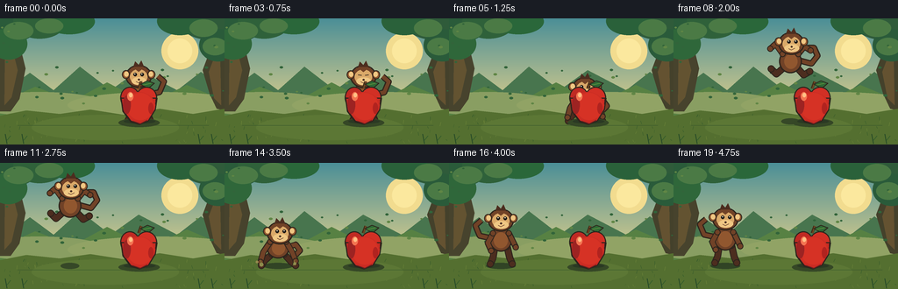
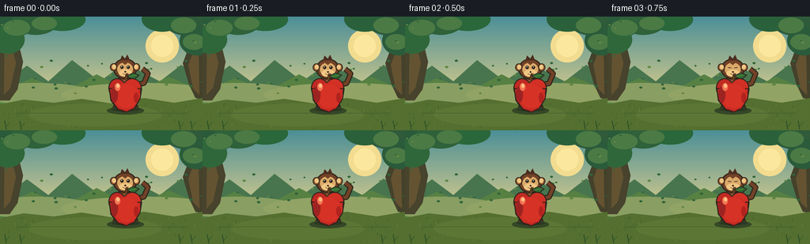

CODING AGENTS AS PIXEL WORLD MODELS
traex/GPT-5.6-Sol · dynamic_spatial_relationship_0053
点击播放 · 原生 RGB 像素
逐轮保存的候选
回放视频、检查图与代码变化。
每份候选均可单独播放。实际图片检查记录在下方工具轨迹中。
候选 01播放与检查图
点击播放 · 原生 RGB 像素


展开代码变化
--- 上一保存版本
+++ 本次保存版本
@@ -0,0 +1,280 @@
+from pathlib import Path
+import math
+import json
+import numpy as np
+from PIL import Image, ImageDraw, ImageFilter
+import artifact_io
+
+# Deterministic, hand-drawn vector animation rendered at 4x and downsampled.
+CASE_DIR = Path(__file__).resolve().parent
+SPEC = json.loads((CASE_DIR / "task_spec.json").read_text())
+W, H, N = SPEC["width"], SPEC["height"], SPEC["frames"]
+S = 4
+
+def box(b):
+ return tuple(int(round(v*S)) for v in b)
+
+def pts(p):
+ return [(int(round(x*S)), int(round(y*S))) for x,y in p]
+
+def ellipse(d, b, fill, outline=None, width=1):
+ d.ellipse(box(b), fill=fill, outline=outline, width=max(1,int(width*S)))
+
+def polygon(d, p, fill, outline=None, width=1):
+ d.polygon(pts(p), fill=fill)
+ if outline:
+ d.line(pts(p+[p[0]]), fill=outline, width=max(1,int(width*S)), joint="curve")
+
+def line(d, p, fill, width=1, joint="curve"):
+ d.line(pts(p), fill=fill, width=max(1,int(width*S)), joint=joint)
+
+def rounded(d, b, radius, fill, outline=None, width=1):
+ d.rounded_rectangle(box(b), radius=int(radius*S), fill=fill, outline=outline,
+ width=max(1,int(width*S)))
+
+def make_background():
+ im = Image.new("RGB", (W*S, H*S))
+ a = np.zeros((H*S, W*S, 3), dtype=np.uint8)
+ # Soft morning sky and grassy foreground gradients.
+ for yy in range(H*S):
+ y = yy/S
+ if y < 103:
+ t = y/103
+ c0=np.array([75,143,151]); c1=np.array([218,205,139])
+ c=(c0*(1-t)+c1*t)
+ else:
+ t=(y-103)/(H-103)
+ c0=np.array([116,137,62]); c1=np.array([58,87,42])
+ c=(c0*(1-t)+c1*t)
+ a[yy,:,:] = c.astype(np.uint8)
+ im = Image.fromarray(a, "RGB")
+ d = ImageDraw.Draw(im)
+
+ # Distant glow and layered hills.
+ ellipse(d, (184,16,226,58), (242,220,143))
+ ellipse(d, (191,23,219,51), (251,232,158))
+ polygon(d, [(0,87),(34,62),(61,82),(91,55),(126,82),(158,59),(202,82),(229,61),(256,81),(256,107),(0,107)], (72,117,78))
+ polygon(d, [(0,96),(40,78),(83,94),(122,73),(169,97),(213,76),(256,94),(256,111),(0,111)], (87,129,67))
+ # Mist bands.
+ ellipse(d, (-30,84,119,111), (137,158,98))
+ ellipse(d, (77,84,283,114), (145,163,101))
+
+ # Framing orchard trunks; no extra fruit to keep the hero apple unambiguous.
+ polygon(d, [(0,0),(25,0),(22,29),(29,57),(22,92),(12,106),(0,106)], (71,67,45))
+ polygon(d, [(6,0),(17,0),(15,39),(20,59),(13,90),(5,99)], (99,83,49))
+ polygon(d, [(256,0),(239,0),(240,35),(231,59),(239,86),(247,103),(256,105)], (68,65,43))
+ polygon(d, [(250,0),(244,0),(246,40),(238,61),(244,91),(252,99)], (100,82,49))
+ # Canopy clusters with rim highlights.
+ canopy = [(-15,-10,42,27),(15,-15,75,23),(50,-11,108,18),(208,-10,267,24),(179,-13,231,19),
+ (-12,11,31,47),(227,12,270,49)]
+ for i,b in enumerate(canopy):
+ ellipse(d,b,(42+5*(i%2),91+6*(i%3),58))
+ for b in [(4,4,38,24),(40,0,72,17),(216,1,248,21),(231,22,259,42)]:
+ ellipse(d,b,(75,122,69))
+ # Small foliage flecks.
+ rng=np.random.default_rng(5353)
+ for _ in range(55):
+ x=float(rng.uniform(0,256)); y=float(rng.uniform(6,99))
+ if 31 < x < 225 and y < 55: continue
+ r=float(rng.uniform(.6,1.5))
+ col=(50,100,58) if rng.random()<.55 else (96,134,69)
+ ellipse(d,(x-r*1.6,y-r,x+r*1.6,y+r),col)
+ # Ground banks and painterly strokes.
+ polygon(d, [(0,111),(30,105),(68,109),(103,104),(141,110),(182,103),(220,109),(256,103),(256,144),(0,144)], (84,111,48))
+ for _ in range(75):
+ x=float(rng.uniform(0,256)); y=float(rng.uniform(112,143)); L=float(rng.uniform(1.2,4.5))
+ col=(108,132,57) if rng.random()<.5 else (53,91,43)
+ line(d,[(x,y),(x+rng.uniform(-1.5,1.5),y-L)],col,rng.uniform(.35,.8))
+ # A warm clearing under the subjects.
+ ellipse(d,(36,110,204,139),(92,119,53))
+ line(d,[(20,122),(238,122)],(58,89,44),.7)
+ return im
+
+BG = make_background()
+
+INK=(45,36,28)
+FUR=(113,66,39)
+FUR_DARK=(76,45,31)
+FUR_LIGHT=(145,87,47)
+TAN=(218,169,105)
+TAN_LIGHT=(239,199,132)
+
+def limb(draw, path, width, color=FUR_DARK):
+ # outlined rounded limb using layered lines and circular caps
+ line(draw,path,INK,width+2)
+ line(draw,path,color,width)
+ r=width/2
+ for x,y in (path[0],path[-1]):
+ ellipse(draw,(x-r-1,y-r-1,x+r+1,y+r+1),INK)
+ ellipse(draw,(x-r,y-r,x+r,y+r),color)
+
+def monkey(draw, x, foot_y, pose, phase=0.0, blink=False, facing="front"):
+ """Articulated monkey. x/foot_y is the animation anchor."""
+ if pose == "stand":
+ body=(x,foot_y-27); head=(x,foot_y-50)
+ # tail curls out on the left for final silhouette, right while peeking
+ side = -1 if facing=="right" else 1
+ line(draw,[(x+side*10,foot_y-29),(x+side*24,foot_y-32),(x+side*29,foot_y-44),(x+side*22,foot_y-50)],INK,7)
+ line(draw,[(x+side*10,foot_y-29),(x+side*24,foot_y-32),(x+side*29,foot_y-44),(x+side*22,foot_y-50)],FUR,4.5)
+ limb(draw,[(x-7,foot_y-20),(x-9,foot_y-7),(x-12,foot_y)],6,FUR_DARK)
+ limb(draw,[(x+7,foot_y-20),(x+10,foot_y-7),(x+13,foot_y)],6,FUR_DARK)
+ ellipse(draw,(x-13,foot_y-42,x+13,foot_y-14),FUR,INK,1.5)
+ ellipse(draw,(x-8,foot_y-36,x+8,foot_y-18),FUR_LIGHT)
+ # arms angle inward, making the initial peek readable and final gaze directional.
+ if facing=="right":
+ limb(draw,[(x-9,foot_y-35),(x-15,foot_y-24),(x-11,foot_y-15)],5,FUR)
+ limb(draw,[(x+9,foot_y-35),(x+14,foot_y-25),(x+17,foot_y-19)],5,FUR)
+ else:
+ limb(draw,[(x-9,foot_y-34),(x-15,foot_y-24),(x-13,foot_y-15)],5,FUR)
+ limb(draw,[(x+9,foot_y-34),(x+15,foot_y-24),(x+13,foot_y-15)],5,FUR)
+ elif pose in ("crouch","land"):
+ body=(x,foot_y-19); head=(x+(2 if facing=="right" else 0),foot_y-37)
+ line(draw,[(x+7,foot_y-20),(x+20,foot_y-24),(x+25,foot_y-17),(x+20,foot_y-12)],INK,7)
+ line(draw,[(x+7,foot_y-20),(x+20,foot_y-24),(x+25,foot_y-17),(x+20,foot_y-12)],FUR,4.5)
+ limb(draw,[(x-7,foot_y-13),(x-16,foot_y-5),(x-19,foot_y)],6,FUR_DARK)
+ limb(draw,[(x+7,foot_y-13),(x+15,foot_y-4),(x+20,foot_y)],6,FUR_DARK)
+ ellipse(draw,(x-13,foot_y-32,x+13,foot_y-8),FUR,INK,1.5)
+ ellipse(draw,(x-7,foot_y-27,x+8,foot_y-12),FUR_LIGHT)
+ limb(draw,[(x-9,foot_y-27),(x-17,foot_y-15),(x-20,foot_y-4)],5,FUR)
+ limb(draw,[(x+9,foot_y-27),(x+16,foot_y-15),(x+20,foot_y-5)],5,FUR)
+ else: # airborne: open, unmistakable jumping silhouette
+ body=(x,foot_y-26); head=(x+1,foot_y-47)
+ wave=math.sin(phase*math.pi)
+ # expressive curled tail streaming behind (to the right)
+ line(draw,[(x+9,foot_y-28),(x+24,foot_y-24),(x+31,foot_y-33),(x+27,foot_y-42),(x+20,foot_y-42)],INK,7)
+ line(draw,[(x+9,foot_y-28),(x+24,foot_y-24),(x+31,foot_y-33),(x+27,foot_y-42),(x+20,foot_y-42)],FUR,4.5)
+ # Rear limbs bent backward, arms lifted forward/outward.
+ limb(draw,[(x-7,foot_y-20),(x-16,foot_y-12),(x-22,foot_y-18)],6,FUR_DARK)
+ limb(draw,[(x+7,foot_y-20),(x+15,foot_y-11),(x+22,foot_y-15)],6,FUR_DARK)
+ ellipse(draw,(x-13,foot_y-40,x+13,foot_y-13),FUR,INK,1.5)
+ ellipse(draw,(x-7,foot_y-35,x+8,foot_y-18),FUR_LIGHT)
+ limb(draw,[(x-9,foot_y-35),(x-17,foot_y-45-wave*2),(x-23,foot_y-41)],5,FUR)
+ limb(draw,[(x+9,foot_y-35),(x+16,foot_y-45+wave*2),(x+23,foot_y-39)],5,FUR)
+
+ # Head is shared and always on top of the body.
+ hx,hy=head
+ ellipse(draw,(hx-15,hy-13,hx+15,hy+13),FUR,INK,1.5)
+ ellipse(draw,(hx-19,hy-7,hx-10,hy+3),FUR_LIGHT,INK,1.2)
+ ellipse(draw,(hx+10,hy-7,hx+19,hy+3),FUR_LIGHT,INK,1.2)
+ ellipse(draw,(hx-16.5,hy-5.5,hx-11.5,hy+.5),TAN_LIGHT)
+ ellipse(draw,(hx+11.5,hy-5.5,hx+16.5,hy+.5),TAN_LIGHT)
+ # face patch and muzzle
+ ellipse(draw,(hx-10,hy-8,hx+10,hy+9),TAN)
+ ellipse(draw,(hx-8,hy+1,hx+9,hy+10),TAN_LIGHT)
+ # Brow cap gives a monkey-like heart face.
+ polygon(draw,[(hx-10,hy-4),(hx-5,hy-9),(hx,hy-5),(hx+5,hy-9),(hx+10,hy-4),(hx+8,hy-10),(hx-8,hy-10)],FUR)
+ eye_y=hy-2
+ if blink:
+ line(draw,[(hx-6,eye_y),(hx-2,eye_y+.4)],INK,1.1)
+ line(draw,[(hx+2,eye_y+.4),(hx+6,eye_y)],INK,1.1)
+ else:
+ eye_shift=1.1 if facing=="right" else 0
+ ellipse(draw,(hx-6+eye_shift,eye_y-2,hx-2+eye_shift,eye_y+2),(29,25,22))
+ ellipse(draw,(hx+2+eye_shift,eye_y-2,hx+6+eye_shift,eye_y+2),(29,25,22))
+ ellipse(draw,(hx-4.9+eye_shift,eye_y-1.3,hx-3.7+eye_shift,eye_y-.1),(255,244,214))
+ ellipse(draw,(hx+3.1+eye_shift,eye_y-1.3,hx+4.3+eye_shift,eye_y-.1),(255,244,214))
+ ellipse(draw,(hx-.9,hy+2.7,hx+1.5,hy+4.7),(72,45,34))
+ # gentle smile
+ line(draw,[(hx-3,hy+6),(hx,hy+7.5),(hx+4,hy+5.5)],(92,49,38),.9)
+ # top tuft
+ polygon(draw,[(hx-6,hy-11),(hx-4,hy-17),(hx,hy-13),(hx+3,hy-18),(hx+6,hy-11)],FUR_DARK)
+
+
+def apple(draw, bob=0.0):
+ cx,cy=158,98+bob
+ # Contact shadow and tiny reflected halo.
+ ellipse(draw,(135,114,182,124),(53,71,38))
+ ellipse(draw,(141,115,177,120),(42,57,35))
+ # Stem behind leaf.
+ line(draw,[(158,80+bob),(161,72+bob)],(67,45,25),3)
+ line(draw,[(158.5,80+bob),(161,72+bob)],(115,74,35),1.3)
+ polygon(draw,[(160,75+bob),(168,71+bob),(176,74+bob),(169,80+bob)],(46,105,52),INK,1)
+ line(draw,[(163,76+bob),(172,74+bob)],(120,161,67),.8)
+ # Apple silhouette: two lobes plus lower body polygon/ellipses.
+ ellipse(draw,(137,78+bob,159,103+bob),(191,42,35),INK,1.4)
+ ellipse(draw,(155,78+bob,179,103+bob),(210,48,37),INK,1.4)
+ polygon(draw,[(138,91+bob),(140,106+bob),(149,118+bob),(159,121+bob),(169,117+bob),(177,104+bob),(178,91+bob)],(201,43,35),INK,1.4)
+ # Blend lobes with central fill.
+ ellipse(draw,(139,84+bob,177,116+bob),(204,45,35))
+ ellipse(draw,(145,85+bob,175,116+bob),(214,50,37))
+ # Restore clean contour accents and shape bottom.
+ line(draw,[(138,90+bob),(140,105+bob),(149,117+bob),(159,121+bob),(169,117+bob),(177,104+bob),(179,91+bob)],INK,1.4)
+ # Rich shading and specular highlights.
+ ellipse(draw,(140,88+bob,149,109+bob),(157,35,34))
+ ellipse(draw,(145,84+bob,152,94+bob),(243,116,81))
+ ellipse(draw,(147,85+bob,151,90+bob),(255,192,133))
+ ellipse(draw,(169,96+bob,175,109+bob),(177,35,31))
+ line(draw,[(151,117+bob),(160,120+bob),(168,116+bob)],(113,32,29),1)
+
+
+def draw_shadow(draw,x,height,air=False):
+ if air:
+ # Higher airborne anchors create smaller, lighter shadows.
+ lift=max(0,112-height)
+ rx=max(7,15-lift*.12)
+ col=(54,72,39)
+ ellipse(draw,(x-rx,116-rx*.18,x+rx,119+rx*.18),col)
+ else:
+ ellipse(draw,(x-17,114,x+17,121),(49,68,37))
+
+
+def render_frame(i):
+ im=BG.copy()
+ d=ImageDraw.Draw(im)
+ # Stable main-apple shadow exists beneath all action.
+ # Animation staging: establish -> anticipation -> leap -> landing -> final hold.
+ if i <= 4:
+ x=158 + math.sin(i*.9)*.35
+ fy=116 + math.sin(i*.8)*.35
+ draw_shadow(d,x,fy)
+ monkey(d,x,fy,"stand",blink=(i==3),facing="front")
+ # Apple is deliberately painted after monkey: unmistakable occlusion = behind.
+ apple(d)
+ elif i==5:
+ x,fy=155,117
+ draw_shadow(d,x,fy)
+ monkey(d,x,fy,"crouch",facing="front")
+ apple(d)
+ elif 6 <= i <= 13:
+ u=(i-6)/7.0
+ # Smooth horizontal travel, parabolic arc peaking around frames 9â10.
+ ease=u*u*(3-2*u)
+ x=151+(62-151)*ease
+ fy=113-48*math.sin(math.pi*u)
+ draw_shadow(d,x,fy,air=True)
+ # Apple remains foreground when the monkey is still crossing its silhouette.
+ if i <= 7:
+ monkey(d,x,fy,"jump",phase=u,facing="right")
+ apple(d)
+ else:
+ apple(d)
+ monkey(d,x,fy,"jump",phase=u,facing="right")
+ elif i <= 15:
+ x=61-(i-14)*1.5
+ fy=117 if i==14 else 116
+ draw_shadow(d,x,fy)
+ apple(d)
+ monkey(d,x,fy,"land",phase=1,facing="right")
+ # Small landing puffs / kicked grass.
+ for dx,dy,r in [(-19,116,2.2),(-24,113,1.4),(19,115,1.8)]:
+ ellipse(d,(x+dx-r,dy-r,x+dx+r,dy+r),(145,139,78))
+ for dx in (-18,17):
+ line(d,[(x+dx,117),(x+dx*1.12,111)],(126,137,64),.8)
+ else:
+ x=59
+ # damped recovery from landing into a confident, stable pose
+ fy=114 + (1.2 if i==16 else .4 if i==17 else 0)
+ draw_shadow(d,x,fy)
+ apple(d)
+ monkey(d,x,fy,"stand",blink=(i==18),facing="right")
+
+ # Foreground blades add depth without covering the subjects.
+ for xx in (8,27,228,243):
+ line(d,[(xx,143),(xx-2,132)],(37,73,39),1)
+ line(d,[(xx,139),(xx+4,134)],(54,93,43),.8)
+ return np.asarray(im.resize((W,H), Image.Resampling.LANCZOS).convert("RGB"), dtype=np.uint8)
+
+frames=np.stack([render_frame(i) for i in range(N)], axis=0)
+assert frames.shape == (N,H,W,3) and frames.dtype == np.uint8
+artifact_io.save(frames, CASE_DIR)
+print(f"saved {N} RGB frames: {frames.shape}, {frames.dtype}")
可观测工具轨迹
实际执行的命令与返回图片。
命令 1exit 0
/bin/bash -lc "cat prompt.txt && printf '\\n--- GENERATION_RULES.md ---\\n' && cat GENERATION_RULES.md && printf '\\n--- task_spec.json ---\\n' && cat task_spec.json"
命令 2exit 0
/bin/bash -lc "printf '%s\\n' '--- files ---'; find . -maxdepth 3 -type f -printf '%p\\n' | sort; printf '%s\\n' '--- commands ---'; command -v ffmpeg || true; command -v python3 || true; python3 - <<'PY' mods=['PIL','numpy','cv2','imageio','cairo'] for m in mods: try: x=__import__(m); print(m,'OK',getattr(x,'__version__','')) except Exception as e: print(m,'NO',e) PY"
命令 3exit 0
/bin/bash -lc 'cat artifact_io.py'
命令 4exit 0
/bin/bash -lc "cat > generate.py <<'PY'
from pathlib import Path
import math
import json
import numpy as np
from PIL import Image, ImageDraw, ImageFilter
import artifact_io
# Deterministic, hand-drawn vector animation rendered at 4x and downsampled.
CASE_DIR = Path(__file__).resolve().parent
SPEC = json.loads((CASE_DIR / \"task_spec.json\").read_text())
W, H, N = SPEC[\"width\"], SPEC[\"height\"], SPEC[\"frames\"]
S = 4
def box(b):
return tuple(int(round(v*S)) for v in b)
def pts(p):
return [(int(round(x*S)), int(round(y*S))) for x,y in p]
def ellipse(d, b, fill, outline=None, width=1):
d.ellipse(box(b), fill=fill, outline=outline, width=max(1,int(width*S)))
def polygon(d, p, fill, outline=None, width=1):
d.polygon(pts(p), fill=fill)
if outline:
d.line(pts(p+[p[0]]), fill=outline, width=max(1,int(width*S)), joint=\"curve\")
def line(d, p, fill, width=1, joint=\"curve\"):
d.line(pts(p), fill=fill, width=max(1,int(width*S)), joint=joint)
def rounded(d, b, radius, fill, outline=None, width=1):
d.rounded_rectangle(box(b), radius=int(radius*S), fill=fill, outline=outline,
width=max(1,int(width*S)))
def make_background():
im = Image.new(\"RGB\", (W*S, H*S))
a = np.zeros((H*S, W*S, 3), dtype=np.uint8)
# Soft morning sky and grassy foreground gradients.
for yy in range(H*S):
y = yy/S
if y < 103:
t = y/103
c0=np.array([75,143,151]); c1=np.array([218,205,139])
c=(c0*(1-t)+c1*t)
else:
t=(y-103)/(H-103)
c0=np.array([116,137,62]); c1=np.array([58,87,42])
c=(c0*(1-t)+c1*t)
a[yy,:,:] = c.astype(np.uint8)
im = Image.fromarray(a, \"RGB\")
d = ImageDraw.Draw(im)
# Distant glow and layered hills.
ellipse(d, (184,16,226,58), (242,220,143))
ellipse(d, (191,23,219,51), (251,232,158))
polygon(d, [(0,87),(34,62),(61,82),(91,55),(126,82),(158,59),(202,82),(229,61),(256,81),(256,107),(0,107)], (72,117,78))
polygon(d, [(0,96),(40,78),(83,94),(122,73),(169,97),(213,76),(256,94),(256,111),(0,111)], (87,129,67))
# Mist bands.
ellipse(d, (-30,84,119,111), (137,158,98))
ellipse(d, (77,84,283,114), (145,163,101))
# Framing orchard trunks; no extra fruit to keep the hero apple unambiguous.
polygon(d, [(0,0),(25,0),(22,29),(29,57),(22,92),(12,106),(0,106)], (71,67,45))
polygon(d, [(6,0),(17,0),(15,39),(20,59),(13,90),(5,99)], (99,83,49))
polygon(d, [(256,0),(239,0),(240,35),(231,59),(239,86),(247,103),(256,105)], (68,65,43))
polygon(d, [(250,0),(244,0),(246,40),(238,61),(244,91),(252,99)], (100,82,49))
# Canopy clusters with rim highlights.
canopy = [(-15,-10,42,27),(15,-15,75,23),(50,-11,108,18),(208,-10,267,24),(179,-13,231,19),
(-12,11,31,47),(227,12,270,49)]
for i,b in enumerate(canopy):
ellipse(d,b,(42+5*(i%2),91+6*(i%3),58))
for b in [(4,4,38,24),(40,0,72,17),(216,1,248,21),(231,22,259,42)]:
ellipse(d,b,(75,122,69))
# Small foliage flecks.
rng=np.random.default_rng(5353)
for _ in range(55):
x=float(rng.uniform(0,256)); y=float(rng.uniform(6,99))
if 31 < x < 225 and y < 55: continue
r=float(rng.uniform(.6,1.5))
col=(50,100,58) if rng.random()<.55 else (96,134,69)
ellipse(d,(x-r*1.6,y-r,x+r*1.6,y+r),col)
# Ground banks and painterly strokes.
polygon(d, [(0,111),(30,105),(68,109),(103,104),(141,110),(182,103),(220,109),(256,103),(256,144),(0,144)], (84,111,48))
for _ in range(75):
x=float(rng.uniform(0,256)); y=float(rng.uniform(112,143)); L=float(rng.uniform(1.2,4.5))
col=(108,132,57) if rng.random()<.5 else (53,91,43)
line(d,[(x,y),(x+rng.uniform(-1.5,1.5),y-L)],col,rng.uniform(.35,.8))
# A warm clearing under the subjects.
ellipse(d,(36,110,204,139),(92,119,53))
line(d,[(20,122),(238,122)],(58,89,44),.7)
return im
BG = make_background()
INK=(45,36,28)
FUR=(113,66,39)
FUR_DARK=(76,45,31)
FUR_LIGHT=(145,87,47)
TAN=(218,169,105)
TAN_LIGHT=(239,199,132)
def limb(draw, path, width, color=FUR_DARK):
# outlined rounded limb using layered lines and circular caps
line(draw,path,INK,width+2)
line(draw,path,color,width)
r=width/2
for x,y in (path[0],path[-1]):
ellipse(draw,(x-r-1,y-r-1,x+r+1,y+r+1),INK)
ellipse(draw,(x-r,y-r,x+r,y+r),color)
def monkey(draw, x, foot_y, pose, phase=0.0, blink=False, facing=\"front\"):
\"\"\"Articulated monkey. x/foot_y is the animation anchor.\"\"\"
if pose == \"stand\":
body=(x,foot_y-27); head=(x,foot_y-50)
# tail curls out on the left for final silhouette, right while peeking
side = -1 if facing==\"right\" else 1
line(draw,[(x+side*10,foot_y-29),(x+side*24,foot_y-32),(x+side*29,foot_y-44),(x+side*22,foot_y-50)],INK,7)
line(draw,[(x+side*10,foot_y-29),(x+side*24,foot_y-32),(x+side*29,foot_y-44),(x+side*22,foot_y-50)],FUR,4.5)
limb(draw,[(x-7,foot_y-20),(x-9,foot_y-7),(x-12,foot_y)],6,FUR_DARK)
limb(draw,[(x+7,foot_y-20),(x+10,foot_y-7),(x+13,foot_y)],6,FUR_DARK)
ellipse(draw,(x-13,foot_y-42,x+13,foot_y-14),FUR,INK,1.5)
ellipse(draw,(x-8,foot_y-36,x+8,foot_y-18),FUR_LIGHT)
# arms angle inward, making the initial peek readable and final gaze directional.
if facing==\"right\":
limb(draw,[(x-9,foot_y-35),(x-15,foot_y-24),(x-11,foot_y-15)],5,FUR)
limb(draw,[(x+9,foot_y-35),(x+14,foot_y-25),(x+17,foot_y-19)],5,FUR)
else:
limb(draw,[(x-9,foot_y-34),(x-15,foot_y-24),(x-13,foot_y-15)],5,FUR)
limb(draw,[(x+9,foot_y-34),(x+15,foot_y-24),(x+13,foot_y-15)],5,FUR)
elif pose in (\"crouch\",\"land\"):
body=(x,foot_y-19); head=(x+(2 if facing==\"right\" else 0),foot_y-37)
line(draw,[(x+7,foot_y-20),(x+20,foot_y-24),(x+25,foot_y-17),(x+20,foot_y-12)],INK,7)
line(draw,[(x+7,foot_y-20),(x+20,foot_y-24),(x+25,foot_y-17),(x+20,foot_y-12)],FUR,4.5)
limb(draw,[(x-7,foot_y-13),(x-16,foot_y-5),(x-19,foot_y)],6,FUR_DARK)
limb(draw,[(x+7,foot_y-13),(x+15,foot_y-4),(x+20,foot_y)],6,FUR_DARK)
ellipse(draw,(x-13,foot_y-32,x+13,foot_y-8),FUR,INK,1.5)
ellipse(draw,(x-7,foot_y-27,x+8,foot_y-12),FUR_LIGHT)
limb(draw,[(x-9,foot_y-27),(x-17,foot_y-15),(x-20,foot_y-4)],5,FUR)
limb(draw,[(x+9,foot_y-27),(x+16,foot_y-15),(x+20,foot_y-5)],5,FUR)
else: # airborne: open, unmistakable jumping silhouette
body=(x,foot_y-26); head=(x+1,foot_y-47)
wave=math.sin(phase*math.pi)
# expressive curled tail streaming behind (to the right)
line(draw,[(x+9,foot_y-28),(x+24,foot_y-24),(x+31,foot_y-33),(x+27,foot_y-42),(x+20,foot_y-42)],INK,7)
line(draw,[(x+9,foot_y-28),(x+24,foot_y-24),(x+31,foot_y-33),(x+27,foot_y-42),(x+20,foot_y-42)],FUR,4.5)
# Rear limbs bent backward, arms lifted forward/outward.
limb(draw,[(x-7,foot_y-20),(x-16,foot_y-12),(x-22,foot_y-18)],6,FUR_DARK)
limb(draw,[(x+7,foot_y-20),(x+15,foot_y-11),(x+22,foot_y-15)],6,FUR_DARK)
ellipse(draw,(x-13,foot_y-40,x+13,foot_y-13),FUR,INK,1.5)
ellipse(draw,(x-7,foot_y-35,x+8,foot_y-18),FUR_LIGHT)
limb(draw,[(x-9,foot_y-35),(x-17,foot_y-45-wave*2),(x-23,foot_y-41)],5,FUR)
limb(draw,[(x+9,foot_y-35),(x+16,foot_y-45+wave*2),(x+23,foot_y-39)],5,FUR)
# Head is shared and always on top of the body.
hx,hy=head
ellipse(draw,(hx-15,hy-13,hx+15,hy+13),FUR,INK,1.5)
ellipse(draw,(hx-19,hy-7,hx-10,hy+3),FUR_LIGHT,INK,1.2)
ellipse(draw,(hx+10,hy-7,hx+19,hy+3),FUR_LIGHT,INK,1.2)
ellipse(draw,(hx-16.5,hy-5.5,hx-11.5,hy+.5),TAN_LIGHT)
ellipse(draw,(hx+11.5,hy-5.5,hx+16.5,hy+.5),TAN_LIGHT)
# face patch and muzzle
ellipse(draw,(hx-10,hy-8,hx+10,hy+9),TAN)
ellipse(draw,(hx-8,hy+1,hx+9,hy+10),TAN_LIGHT)
# Brow cap gives a monkey-like heart face.
polygon(draw,[(hx-10,hy-4),(hx-5,hy-9),(hx,hy-5),(hx+5,hy-9),(hx+10,hy-4),(hx+8,hy-10),(hx-8,hy-10)],FUR)
eye_y=hy-2
if blink:
line(draw,[(hx-6,eye_y),(hx-2,eye_y+.4)],INK,1.1)
line(draw,[(hx+2,eye_y+.4),(hx+6,eye_y)],INK,1.1)
else:
eye_shift=1.1 if facing==\"right\" else 0
ellipse(draw,(hx-6+eye_shift,eye_y-2,hx-2+eye_shift,eye_y+2),(29,25,22))
ellipse(draw,(hx+2+eye_shift,eye_y-2,hx+6+eye_shift,eye_y+2),(29,25,22))
ellipse(draw,(hx-4.9+eye_shift,eye_y-1.3,hx-3.7+eye_shift,eye_y-.1),(255,244,214))
ellipse(draw,(hx+3.1+eye_shift,eye_y-1.3,hx+4.3+eye_shift,eye_y-.1),(255,244,214))
ellipse(draw,(hx-.9,hy+2.7,hx+1.5,hy+4.7),(72,45,34))
# gentle smile
line(draw,[(hx-3,hy+6),(hx,hy+7.5),(hx+4,hy+5.5)],(92,49,38),.9)
# top tuft
polygon(draw,[(hx-6,hy-11),(hx-4,hy-17),(hx,hy-13),(hx+3,hy-18),(hx+6,hy-11)],FUR_DARK)
def apple(draw, bob=0.0):
cx,cy=158,98+bob
# Contact shadow and tiny reflected halo.
ellipse(draw,(135,114,182,124),(53,71,38))
ellipse(draw,(141,115,177,120),(42,57,35))
# Stem behind leaf.
line(draw,[(158,80+bob),(161,72+bob)],(67,45,25),3)
line(draw,[(158.5,80+bob),(161,72+bob)],(115,74,35),1.3)
polygon(draw,[(160,75+bob),(168,71+bob),(176,74+bob),(169,80+bob)],(46,105,52),INK,1)
line(draw,[(163,76+bob),(172,74+bob)],(120,161,67),.8)
# Apple silhouette: two lobes plus lower body polygon/ellipses.
ellipse(draw,(137,78+bob,159,103+bob),(191,42,35),INK,1.4)
ellipse(draw,(155,78+bob,179,103+bob),(210,48,37),INK,1.4)
polygon(draw,[(138,91+bob),(140,106+bob),(149,118+bob),(159,121+bob),(169,117+bob),(177,104+bob),(178,91+bob)],(201,43,35),INK,1.4)
# Blend lobes with central fill.
ellipse(draw,(139,84+bob,177,116+bob),(204,45,35))
ellipse(draw,(145,85+bob,175,116+bob),(214,50,37))
# Restore clean contour accents and shape bottom.
line(draw,[(138,90+bob),(140,105+bob),(149,117+bob),(159,121+bob),(169,117+bob),(177,104+bob),(179,91+bob)],INK,1.4)
# Rich shading and specular highlights.
ellipse(draw,(140,88+bob,149,109+bob),(157,35,34))
ellipse(draw,(145,84+bob,152,94+bob),(243,116,81))
ellipse(draw,(147,85+bob,151,90+bob),(255,192,133))
ellipse(draw,(169,96+bob,175,109+bob),(177,35,31))
line(draw,[(151,117+bob),(160,120+bob),(168,116+bob)],(113,32,29),1)
def draw_shadow(draw,x,height,air=False):
if air:
# Higher airborne anchors create smaller, lighter shadows.
lift=max(0,112-height)
rx=max(7,15-lift*.12)
col=(54,72,39)
ellipse(draw,(x-rx,116-rx*.18,x+rx,119+rx*.18),col)
else:
ellipse(draw,(x-17,114,x+17,121),(49,68,37))
def render_frame(i):
im=BG.copy()
d=ImageDraw.Draw(im)
# Stable main-apple shadow exists beneath all action.
# Animation staging: establish -> anticipation -> leap -> landing -> final hold.
if i <= 4:
x=158 + math.sin(i*.9)*.35
fy=116 + math.sin(i*.8)*.35
draw_shadow(d,x,fy)
monkey(d,x,fy,\"stand\",blink=(i==3),facing=\"front\")
# Apple is deliberately painted after monkey: unmistakable occlusion = behind.
apple(d)
elif i==5:
x,fy=155,117
draw_shadow(d,x,fy)
monkey(d,x,fy,\"crouch\",facing=\"front\")
apple(d)
elif 6 <= i <= 13:
u=(i-6)/7.0
# Smooth horizontal travel, parabolic arc peaking around frames 9â10.
ease=u*u*(3-2*u)
x=151+(62-151)*ease
fy=113-48*math.sin(math.pi*u)
draw_shadow(d,x,fy,air=True)
# Apple remains foreground when the monkey is still crossing its silhouette.
if i <= 7:
monkey(d,x,fy,\"jump\",phase=u,facing=\"right\")
apple(d)
else:
apple(d)
monkey(d,x,fy,\"jump\",phase=u,facing=\"right\")
elif i <= 15:
x=61-(i-14)*1.5
fy=117 if i==14 else 116
draw_shadow(d,x,fy)
apple(d)
monkey(d,x,fy,\"land\",phase=1,facing=\"right\")
# Small landing puffs / kicked grass.
for dx,dy,r in [(-19,116,2.2),(-24,113,1.4),(19,115,1.8)]:
ellipse(d,(x+dx-r,dy-r,x+dx+r,dy+r),(145,139,78))
for dx in (-18,17):
line(d,[(x+dx,117),(x+dx*1.12,111)],(126,137,64),.8)
else:
x=59
# damped recovery from landing into a confident, stable pose
fy=114 + (1.2 if i==16 else .4 if i==17 else 0)
draw_shadow(d,x,fy)
apple(d)
monkey(d,x,fy,\"stand\",blink=(i==18),facing=\"right\")
# Foreground blades add depth without covering the subjects.
for xx in (8,27,228,243):
line(d,[(xx,143),(xx-2,132)],(37,73,39),1)
line(d,[(xx,139),(xx+4,134)],(54,93,43),.8)
return np.asarray(im.resize((W,H), Image.Resampling.LANCZOS).convert(\"RGB\"), dtype=np.uint8)
frames=np.stack([render_frame(i) for i in range(N)], axis=0)
assert frames.shape == (N,H,W,3) and frames.dtype == np.uint8
artifact_io.save(frames, CASE_DIR)
print(f\"saved {N} RGB frames: {frames.shape}, {frames.dtype}\")
PY
python3 generate.py
ls -lh pixels.npz inspection.png transition_check.png index.html frames/00.png frames/19.png"命令 5exit 1
/bin/bash -lc 'python3 -m py_compile generate.py artifact_io.py && python3 generate.py >/tmp/regenerate.log && cat /tmp/regenerate.log && sha256sum pixels.npz frames/00.png frames/19.png'
命令 6exit 0
/bin/bash -lc "python3 - <<'PY'
from pathlib import Path
import numpy as np
from PIL import Image
p=np.load('pixels.npz')['pixels']
assert p.shape==(144,256,20),p.shape
assert p.dtype==np.uint32,p.dtype
fs=np.stack([np.array(Image.open(f'frames/{i:02}.png').convert('RGB')) for i in range(20)])
assert fs.shape==(20,144,256,3) and fs.dtype==np.uint8
# Verify packed RGB exactly matches PNG sequence.
packed=((fs[:,:,:,0].astype(np.uint32)<<16)|(fs[:,:,:,1].astype(np.uint32)<<8)|fs[:,:,:,2]).transpose(1,2,0)
assert np.array_equal(p,packed)
print('NPZ/PNG integrity: PASS',p.shape,p.dtype)
print('unique colors/frame:',*[len(np.unique(x.reshape(-1,3),axis=0)) for x in fs])
print('changed pixels between frames:',*[int(np.any(fs[i]"'!=fs[i-1],axis=2).sum()) for i in range(1,20)])
print('"'mean abs frame deltas:',*[round(float(np.abs(fs[i].astype(int)-fs[i-1].astype(int)).mean()),2) for i in range(1,20)])
print('index size:',Path('index.html').stat().st_size,'bytes; frame count:',len(list(Path('frames').glob('*.png'))))
PY"命令 7exit 0
/bin/bash -lc 'python3 -m py_compile generate.py artifact_io.py && python3 generate.py > regenerate.log && cat regenerate.log && sha256sum pixels.npz frames/00.png frames/19.png && rm regenerate.log'
保存候选 1 份；完成命令 7 次；可验证图片返回 0 张。原始 API 响应与完整日志保留在本地。